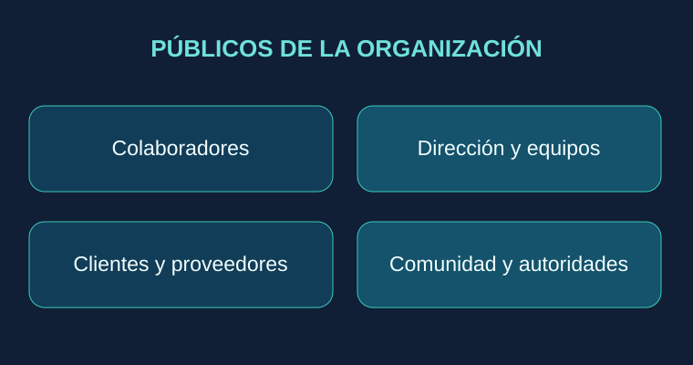
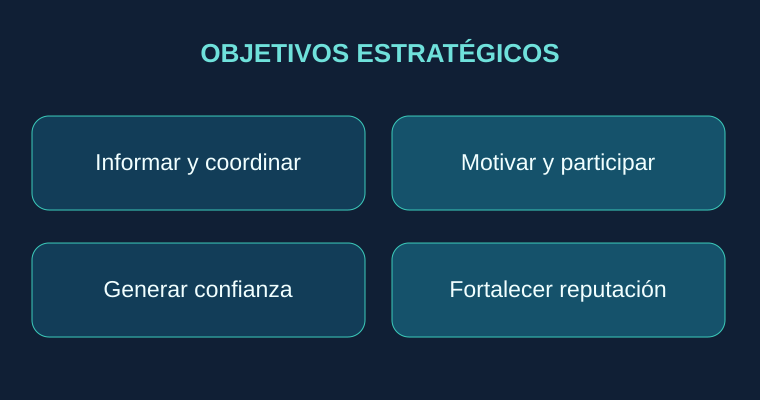
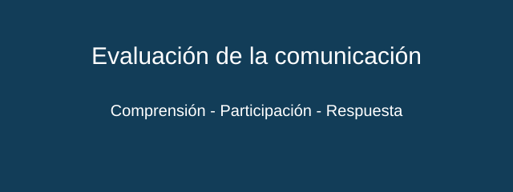

Un análisis de la comunicación interna y externa como capacidades estratégicas para coordinar personas, construir confianza y sostener relaciones con la sociedad.
Comunicación interna y externa: dos dimensiones de un mismo sistema organizacional
La comunicación no es exclusivamente transmisión de mensajes: es un proceso de construcción de sentido, coordinación y escucha.
¿Qué es la comunicación interna?
Es el conjunto de procesos formales e informales mediante los cuales las personas y las áreas de una organización intercambian información, interpretan decisiones y coordinan su actuación. Gómez Aguilar (2007) estudia su relación con la organización del trabajo y la productividad. La compilación académica de las unidades 2 y 3 destaca su función de articular relaciones y alinear esfuerzos.
Los flujos principales son descendente, cuando la dirección informa prioridades y decisiones; ascendente, cuando las personas expresan necesidades, inquietudes y propuestas; y horizontal, cuando equipos o departamentos colaboran entre sí. A ello se añaden los canales formales —políticas, comunicados, reuniones— e informales —interacciones espontáneas—, que no son necesariamente opuestos, sino complementarios cuando existe confianza.
¿Qué es la comunicación externa?
Es el intercambio de información y significados de la organización con clientes, proveedores, instituciones, medios, comunidades y otros grupos de interés. Sánchez Calero (2005) distingue una dimensión operativa vinculada al trabajo cotidiano, una estratégica orientada a comprender el entorno y una de notoriedad que proyecta identidad y reputación. La comunicación externa debe ser coherente con lo que ocurre internamente.
Elementos del proceso
Un proceso comunicativo requiere un emisor responsable, un propósito definido, un mensaje comprensible, el canal adecuado, la audiencia identificada y mecanismos de retroalimentación. El contexto y las barreras culturales, técnicas o jerárquicas también influyen. Por tanto, que un correo haya sido enviado no demuestra que la información haya sido comprendida.

Públicos internos y externos de la organización.Proceso de diagnóstico, comunicación y retroalimentación.
Objetivos y beneficios de los procesos comunicativos internos y externos
Comunicar con eficacia supone diseñar resultados, no aumentar indiscriminadamente la cantidad de mensajes.
Objetivos internos
La comunicación interna busca dar claridad al rumbo de la organización, explicar políticas, favorecer la coordinación, motivar a las personas, habilitar la participación y reducir la incertidumbre frente al cambio. Según la unidad 2, también ayuda a detectar conflictos potenciales y fortalecer el sentido de pertenencia. Estas funciones requieren escuchar y cerrar el ciclo de respuesta; una encuesta sin seguimiento puede deteriorar la confianza.
Objetivos externos
La comunicación externa busca explicar la identidad institucional, ofrecer información útil y veraz, establecer relaciones estables con el entorno, atender expectativas y fortalecer la legitimidad social. Sánchez Calero (2005) subraya la continuidad y la veracidad informativa. No se limita a publicidad: incluye atención a clientes, relaciones institucionales y respuesta responsable ante incidentes.
Beneficios y condiciones
Entre los beneficios potenciales están la menor ambigüedad operativa, la coordinación interdepartamental, un clima de confianza, una mayor consistencia del servicio y relaciones más sostenibles con los grupos externos. No son resultados automáticos: dependen de pertinencia, claridad, oportunidad, credibilidad y congruencia entre el discurso y la práctica.
Evaluación de la comunicación
Una estrategia madura no mide únicamente correos enviados o publicaciones vistas. Conviene evaluar la comprensión de políticas, la participación en espacios de diálogo, la rapidez y calidad de respuesta, la satisfacción de las audiencias y el tratamiento de las observaciones recibidas. Los indicadores deben interpretarse según el contexto y combinar datos cuantitativos y cualitativos.

Objetivos de las dimensiones interna y externa.

Indicadores orientativos de efectividad comunicativa.
Funciones básicas y aplicaciones de la comunicación en las organizaciones
El verdadero valor de la comunicación se expresa cuando facilita decisiones, protege relaciones y mejora la coordinación.
Funciones básicas de la comunicación interna
La compilación de las unidades 2 y 3 presenta cuatro funciones de la comunicación interna: control, para aclarar normas, responsabilidades y procedimientos; motivación, para brindar orientación y retroalimentación sobre el desempeño; expresión emocional, para favorecer el diálogo sobre satisfacción, necesidades y conflictos; e información, para aportar elementos útiles a la toma de decisiones. El control debe ejercerse de manera transparente y sin bloquear la voz de quienes ejecutan los procesos.
Funciones de la comunicación externa
En el ámbito externo, comunicar implica obtener información relevante del entorno, elaborar mensajes veraces y pertinentes y difundirlos mediante canales adecuados. También comprende la atención de grupos de interés y la construcción de credibilidad. Gómez Aguilar (2007) distingue actividades de captación, elaboración y difusión de la información en la relación con los medios.
Aplicaciones prácticas
En un cambio organizacional, la dirección explica motivos y objetivos mientras los equipos plantean riesgos operativos; hacia el exterior, la institución informa a sus clientes sobre los cambios que les afectan. Ante una interrupción de servicios, los equipos internos deben conocer roles y procedimientos antes de publicar mensajes externos. En ambos casos, la organización necesita coherencia, responsables definidos, canales de respuesta y seguimiento.
Propuesta de gestión
Una gestión integrada puede organizarse en cuatro fases: diagnóstico de públicos y necesidades; definición de objetivos y mensajes; ejecución a través de canales apropiados; y evaluación de comprensión, participación y respuesta. El diseño debe contemplar accesibilidad, protección de información y mejora continua. La investigación de Pea y Rojas (2013) ilustra la utilidad de diagnosticar audiencias internas y externas antes de proponer un plan de comunicaciones.
Las cuatro funciones de comunicación interna.Modelo de planificación y mejora continua.
La comunicación interna y la externa constituyen un sistema interdependiente de gestión, no dos actividades administrativas aisladas. La primera permite alinear a las personas con los objetivos y las decisiones de la organización, siempre que existan espacios para escuchar, cuestionar y corregir. La segunda construye relaciones con el entorno a partir de la consistencia, el diálogo y la credibilidad. Considero que una organización comunica eficazmente cuando sus mensajes son pertinentes, verificables y coherentes con su conducta. Por ello, el reto no consiste en multiplicar canales, sino en transformar la información en comprensión, coordinación y confianza. Esta perspectiva resulta especialmente relevante frente a cambios tecnológicos, incidentes operativos y expectativas crecientes de transparencia.
Comparte tu retroalimentación
Tu opinión ayudará a enriquecer el análisis académico de la comunicación organizacional. Después de leer las entradas, responde el siguiente formulario. Tu participación es voluntaria.
Si el formulario no aparece en tu navegador, utiliza el botón para abrirlo en una nueva pestaña.
Referencias consultadas · APA 7
Carvajal, L. G., & Ormeño, J. (2014). Técnicas administrativas básicas: Servicios administrativos (pp. 63–65). Editex.
Gómez Aguilar, M. (2007). La comunicación en las organizaciones para la mejora de la productividad: El uso de los medios como fuente informativa en empresas e instituciones andaluzas [Tesis doctoral, Universidad de Málaga].
Pea, I., & Rojas, S. (2013). Plan de comunicaciones integradas para un producto industrial: Caso Manufacturas Frago C. A. [Trabajo de grado, Universidad Católica Andrés Bello].
Sánchez Calero, M. L. (2005). Desarrollo de la comunicación externa en la empresa. Sala de Prensa, (83). http://www.saladeprensa.org
Unidades 2 y 3: Comunicación interna y comunicación externa. (s. f.). [Material didáctico proporcionado en el curso].
Las ilustraciones son diagramas originales de apoyo. Los videos son recursos complementarios enlazados desde YouTube; su disponibilidad depende del canal de origen.